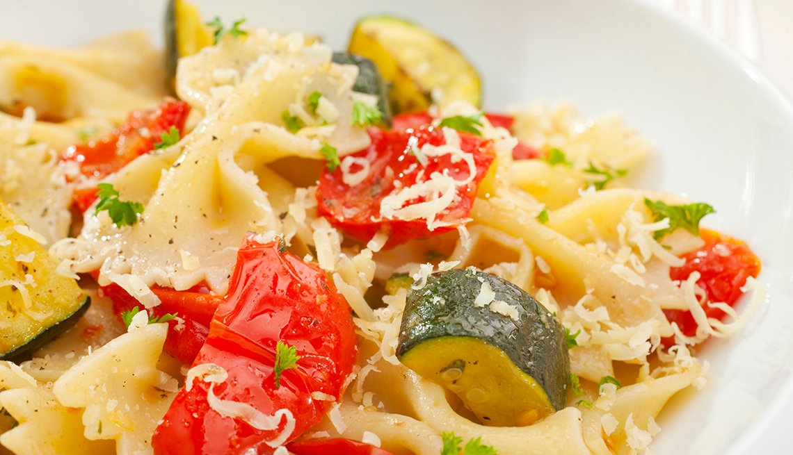

Recetas de Pescados - kiwilimon.com Encuentra y disfruta nuestras recetas de pescado con las que podrás deleitar tu paladar. Pescado a la florentina, pescado empapelado, bacalao navideño, paella de mariscos, son algunos ejemplos de lo que puedes encontrar.
Recetas ricas, rápidas, fáciles y originales | Knorr Descubrí nuestras recetas, son ricas, prácticas y fáciles de hacer. Con Knorr tus recetas quedan increíbles. Knorr, el auténtico sabor de lo hecho en casa.
Google Drive: Sign-in We would like to show you a description here but the site won’t allow us.
Innatia - Vida sana y tradiciones 2.4m Followers, 1,210 Following, 4,148 Posts - See Instagram photos and videos from Paulina Cocina - Recetas y eso (@paulinacocina)
Recetas para ocasiones especiales , caseras y fáciles- De ... Recetas de pollo. El pollo es un ingrediente sano y versátil con el que se pueden cocinar cientos de platos diferentes: guisado, al horno, en salsa, en croquetas, etc. Cuando hablamos de recetas de pollo nos vienen a la cabeza miles de preparaciones con diferentes ingredientes, salsas y guarniciones. Esto es lo bueno del pollo, que se puede preparar de mil maneras, siempre queda riquísimo ...
Recetas de pollo 216.4k Followers, 177 Following, 5,363 Posts - See Instagram photos and videos from Las Recetas de MJ (@lasrecetasdemj)
Gurmé: Recetas de cocina, bares y restaurantes de Sevilla Como hacer MERMELADA de TOMATE en THERMOMIX y otras recetas. Cómo hacer BIZCOCHO CEBRA paso a paso. POLLO a la CERVEZA al horno, a la olla, a la parrilla, plancha y disco. KEBAB en casa o A DOMICILIO. Manualidades Ver más. Cómo RECICLAR ROPA vieja y convertirla en nueva.
Las Recetas de MJ (@lasrecetasdemj) is on Instagram Recetas de Cocina Mexicana, platillos tipicos mexicanos, Pozole, Mole, Antojitos, Chiles y todo el sabor de México en las recetas de cocina de la Abuela
Paulina Cocina - Recetas y eso (@paulinacocina ... Recetas para ocasiones especiales 110 recetas Las mejores recetas para ocasiones especiales: Navidad, San Valetín… o ese día que invitas a comer a tu suegra y tienes que lucirte en la cocina. Con los mejores ingredientes, fotografías y explicaciones paso a paso para hacer sencillo lo que parece complicado.
Gurmé: Recetas de cocina, bares y restaurantes de Sevilla
2021.04.19 19:22

Bares y restaurantes Opiniones Reportajes Actualidad Quiénes somos Premios Gurmé Recetas de Cocina Al Final de la Palmera Orgullo de Nervión Pasión en Sevilla Bulevar Sur Mobility Sevilla Solidaria
Bares y restaurantes Opiniones Reportajes Actualidad Quiénes somos Premios Gurmé Recetas de Cocina Gurmé Bares y Restaurantes Recetas